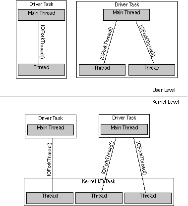
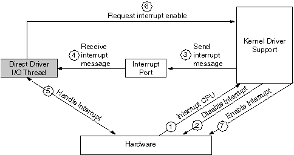

Copyright ©1995 by NeXT Computer, Inc. All Rights Reserved.
| 2 |
Designing a Driver
| The previous chapter covered basic Driver Kit concepts. This chapter discusses details of how to design Driver Kit drivers: |
| How to create and initialize a driver | ||
| How tasks and threads work in drivers and how to communicate with the I/O thread | ||
| How to handle interrupts | ||
| How to connect a driver with other drivers it needs to communicate with |
| Information about specific kinds of drivers--for example, how to write a SCSI controller driver--is in Chapter 3, "Support for Specific Devices." |
| Driver Writing Guidelines |
| Here are guidelines to follow in designing and writing a device driver: |
| Read the specifications for the hardware you're working with. | ||
| Read the first four chapters of this manual. | ||
| Read the IODevice and IODirectDevice class descriptions. | ||
| Decide which class your driver will be a subclass of. Read this class description and the descriptions of any protocols the class conforms to. Read the class specification for any other related classes. If you're writing a network driver, for instance, look at IONetwork. | ||
| Look at examples of drivers for the type you're writing. Examples are located in /NextDeveloper/Examples/DriverKit and /NextLibrary/Documentation/NextDev/Examples/DriverKit | ||
| Create a subclass. Add the appropriate instance variables and methods to your driver subclass. | ||
| Override or write methods in your subclass and any protocols it conforms to. Implement the methods to perform their functions with your hardware. |
| Creating and Initializing Drivers |
| You must override the probe: class method of IODevice in your subclass. This important method looks for the hardware and instantiates and initializes a device driver. The IODeviceDescription object passed as the parameter to probe: provides information about the driver object, including configuration information. |
| Warning: | You should use the alloc and initFromDeviceDescription: methods to instantiate and initialize a driver--not the new method. | |
| For direct device drivers, the IODeviceDescription parameter contains architecture-specific information about a device, such as its DMA channels and interrupts. Your driver subclass should determine whether the device is really present. If so, it should create an instance of itself, using the information in the IODeviceDescription. IODeviceDescription and its subclasses provide access to the device information. | ||
| After probe: instantiates the driver, it should invoke the initFromDeviceDescription: method to initialize the instance (with help from some other methods, too). You typically override this method, although you should incorporate the superclass's implementation by invoking this message on super prior to performing the rest of your initialization. |
 [super initFromDeviceDescription:aDeviceDescription];
[super initFromDeviceDescription:aDeviceDescription];
| Look at this method's description in your driver's superclass to see what functions it provides for you. For example, the IODirectDevice class's initFromDeviceDescription: reserves address ranges, DMA channels, and IRQs (interrupt numbers) for a driver.
The initialization sequence must also include registering the driver with registerDevice so the rest of the system knows about the driver. For direct device drivers, attach interrupts using attachInterruptPort or some other method that invokes attachInterruptPort. IODirectDevice's startIOThread invokes it, for example. Here's a skeleton of the probe: method for a direct device driver of the class MyClass. Italicized text delineated in angle brackets, that is << >>, is to be filled in with device-specific code. |
 + (BOOL)probe:devDesc
+ (BOOL)probe:devDesc
 {
{
 MyClass *instance = [self alloc];
MyClass *instance = [self alloc];
 IOEISADeviceDescription
IOEISADeviceDescription
 *deviceDescription = (IOEISADeviceDescription *)devDesc;
*deviceDescription = (IOEISADeviceDescription *)devDesc;
 if (instance == nil)
if (instance == nil)
 return NO;
return NO;
 /* Check the device description to see that we have some
/* Check the device description to see that we have some
 * I/O ports, mapped memory, and interrupts assigned. */
* I/O ports, mapped memory, and interrupts assigned. */
 if ([deviceDescription numPortRanges] < 1
if ([deviceDescription numPortRanges] < 1
 || [deviceDescription numMemoryRanges] < 1
|| [deviceDescription numMemoryRanges] < 1
 || [deviceDescription numInterrupts] < 1) {
|| [deviceDescription numInterrupts] < 1) {
 [instance free];
[instance free];
 return NO;
return NO;
 }
}
 << Perform more device-specific validation, e.g. checking to make
<< Perform more device-specific validation, e.g. checking to make
 sure the I/O port range is large enough. Make sure the
sure the I/O port range is large enough. Make sure the
 hardware is really there. Return NO if anything is wrong. >>
hardware is really there. Return NO if anything is wrong. >>
 return [instance initFromDeviceDescription:devDesc] != nil;
return [instance initFromDeviceDescription:devDesc] != nil;
 }
}
| If your driver subclass that receives the probe: message is an indirect device driver, the IODeviceDescription specifies an IODevice instance (typically for a direct device) that the indirect device driver might want to work with to communicate with its hardware. For example, if the indirect device driver controls SCSI disks, then the IODeviceDescriptions it receives specify instances of IOSCSIController, a direct device driver. Your driver should determine whether it needs to use the hardware controlled by the specified IODevice instance (for example, whether the SCSI controller has disks attached). If so, your driver subclass should create instances of itself. Here's an outline of probe: for this case: |
 + (BOOL)probe:deviceDescription
+ (BOOL)probe:deviceDescription
 {
{
 MyIndirectDevice *instance = nil;
MyIndirectDevice *instance = nil;
 /*Get IODirectDevice object this indirect device is connected to*/
/*Get IODirectDevice object this indirect device is connected to*/
 id controller = [deviceDescription directDevice];
id controller = [deviceDescription directDevice];
 BOOL rtn = NO;
BOOL rtn = NO;
 for (<< each possible device attached to the direct device >>) {
for (<< each possible device attached to the direct device >>) {
 if (instance == nil)
if (instance == nil)
 instance = [MyIndirectDevice alloc];
instance = [MyIndirectDevice alloc];
 if (<< we can't reserve this device
if (<< we can't reserve this device
 (implying that another driver controls it) >>) {
(implying that another driver controls it) >>) {
 continue;
continue;
 }
}
 << Check whether the device really exists and is a device we
<< Check whether the device really exists and is a device we
 can control. If so, initialize an instance of this driver
can control. If so, initialize an instance of this driver
 with a driver-specific version of init. For example:
with a driver-specific version of init. For example:
 initRtn = [instance initWithController:controller]; >>
initRtn = [instance initWithController:controller]; >>
 if (<< the instance was successfully initialized >>) {
if (<< the instance was successfully initialized >>) {
 [instance registerDevice];
[instance registerDevice];
 /* Do any other driver-specific initialization. */
/* Do any other driver-specific initialization. */
 instance = nil;
instance = nil;
 rtn = YES;
rtn = YES;
 break;
break;
 }
}
 else
else
 << Release our reservation for this device >>
<< Release our reservation for this device >>
 } /* end of for loop */
} /* end of for loop */
 if(instance) {
if(instance) {
 /* Free up any leftover indirect devices. */
/* Free up any leftover indirect devices. */
 [instance free];
[instance free];
 }
}
 return rtn;
return rtn;
 }
}
| Besides the information specific to direct or indirect devices, the IODeviceDescription's IOConfigTable contains miscellaneous configuration information. A beep driver's configuration table, for example, might specify that the driver is a sound-related device and specify the frequency of beeps. The IOConfigTable can be retrieved from the IODeviceDescription using the configTable method. The probe: method or methods that it invokes may do further initialization using this information. |
| Connecting a Driver to Other Drivers |
| The driverLoader program loads your driver's code into the kernel, either because you invoke it or as a result of the driver being specified in the system configuration. The driverLoader program uses the loadable kernel server mechanism and is described in Chapter 4. Once loaded, the driver needs to be connected with the appropriate direct and indirect device drivers that are already in the kernel.
For example, suppose you load a new indirect device driver that controls a SCSI scanner. The SCSI scanner driver works in combination with one or more SCSI controller drivers, so the SCSI scanner driver needs to find each IOSCSIController object in the system. For another example, consider a direct device driver that manages a SCSI controller. Once the driver is loaded and initialized, you want to give all of the SCSI indirect devices (such as disks and scanners) a chance to connect to this controller. Each SCSI disk that's attached to the controller needs a new IODisk instance that's connected to an instance of the IOSCSIController. |
| Terminology: Protocols
A protocol is a list of method declarations, unattached to a class definition. Any class, and perhaps many classes, can implement a particular protocol. Protocols are discussed in Chapter 3 of NEXTSTEP Object-Oriented Programming and the Objective C Language. |
| Discovering Other Objects
When any IODevice subclass is instantiated and initialized, it's automatically connected with any IODevices in the system that need to work with it. Here's how this happens: |
| All IODevices to which an indirect device can be connected must declare their exported interface as an Objective C protocol. For example, the IOSCSIController class declares its exported methods (the messages that indirect devices can send it) in the IOSCSIControllerExported protocol. | ||
| All IODevices that are indirect device drivers must implement the requiredProtocols class method. This method returns a list of protocols the driver's direct devices must conform to. | ||
| Each IODevice must implement the deviceStyle class method, which identifies the driver as a direct, indirect, or pseudo device driver. | ||
| Each IODevice instance must invoke registerDevice when it's initialized (usually in its implementation of initFromDeviceDescription:). This method tells the rest of the system that the driver exists and also probes all indirect IODevices that require this object's protocols, giving them a chance to connect to this object. |
| When driver code is loaded into the kernel, the kernel probes the newly added class and possibly other classes in the system. The result is that each class is probed exactly once per object that it might need to connect to. The kernel probes classes with the probe: method as described below.
If the newly loaded class is an indirect device driver (the system determines this using the deviceStyle class method), the kernel does the following: |
| For each IODevice object (not just IODirectDevices) |
| If the newly loaded class is a direct device or pseudo device driver, the kernel simply probes the new class, without trying to connect it yet.
Whenever a device of any style invokes registerDevice--which should happen whenever a driver object is initialized--the following happens: |
| For each indirect device class |
| In this way, every indirect driver is probed with the device description for every possible direct driver object it could feasibly be connected to. When the indirect driver's probe: method examines the direct device description, it instantiates itself only when the indirect device it supports is physically connected to the direct device, that is, when the hardware is really present. |
| Interfacing with the Driver |
| Drivers export a set of methods that the kernel or programs can use to communicate with the driver. These exported or interface methods communicate requests to the I/O thread.
You don't need to be concerned about the interface to your driver in most cases. The kernel will find your driver and use its exported methods automatically--you don't have to do anything. Most display, network, SCSI controller, and sound drivers are integrated into the system this way. For some drivers, such as SCSI peripherals, you may need to provide an interface that user-level programs or other drivers can access. This interface program then invokes the driver's exported methods. The ideal interface between user-level programs and drivers would be Objective C messages. Currently, this direct interface isn't possible for these reasons: |
| User-level drivers aren't supported. | ||
| The Distributed Objects system (which enables Objective C messages to be sent between objects in separate tasks) doesn't work in the kernel. |
| You can make your driver's user level to kernel level API more object-oriented by providing user-level classes that cover your driver's interface. For example, Sound Kit objects such as NXSoundOut hide the sound driver's private Mach message interface.
This section discusses ways you can communicate with the driver if you need to.
Entry Points If you need to provide an interface, you may want to provide a set of entry points for common driver requests, such as read, write, and so on. Your driver may have UNIX-style or Mach message-based entry points.
UNIX-style Entry Points You can add a set of UNIX-style entry point functions, such as open(2) and read(2), to the cdevsw table for character drivers by invoking the IODevice class method addToCdevswFromDescription:open:close:read:write:ioctl:stop:reset:select:mmap:getc:putc:. A similar method adds entry points to the bdevsw table for block drivers. These methods search for free locations in these tables. The entry point functions added can then communicate with your driver by sending it Objective C messages or Mach messages. See Chapter 2, "Using Mach Messages" in NEXTSTEP Operating System Software. Note: Mach messages are not the same kind of messages as Objective C messages sent to objects. See the references on the Mach operating system and Objective C language in the "Suggested Reading" section of the Appendix. Your driver can retrieve or set the driver's character major device number with characterMajor or setCharacterMajor. Similarly, blockMajor or setBlockMajor retrieves or sets the driver's block major device number. UNIX entry points are documented in books about UNIX device drivers. See "Suggested Reading" in the Appendix for more information about UNIX device drivers.
Entry Points via Mach Messages You can develop a message-based driver interface based on Mach messages. You can create a loadable kernel server and communicate with it using Mach messages. Use the Mach Interface Generator (MiG) to create this message interface. (MiG generates remote procedure calls that handle the Mach messaging for you.) The loadable kernel server can then send Objective C or Mach messages to the driver, just as UNIX entry point routines can do. For more information, refer to NEXTSTEP Operating System Software, Chapter 2, "Using Mach Messages" and Part 2, "Writing Loadable Kernel Servers."
Other Communication Methods You can provide other ways to interface with your driver besides entry points.
Using IODeviceMaster An IODeviceMaster object can get the object number of a device driver using one of the lookUp... methods such as lookUpByDeviceName:objectNumber:deviceKind:. Then it can get or set parameters via methods such as getCharValues:forParameter:objectNumber:count: or setCharValues:forParameter:objectNumber:count:. Manipulating parameters enables applications to control the driver. It also allows telling preloaded programs which major device numbers are used. You can also send driver-specific commands and send and receive small amounts of data. Since IODeviceMaster's buffers are small, the performance overhead would be prohibitive to handle large amounts of data. Although any process can use IODeviceMaster to get information from a driver, IODeviceMaster allows only the superuser to send information to a driver. This mechanism replaces the UNIX ioctl() interface.
Using IODevice Methods If the amount of data you need to transfer to and from your driver is relatively small, you can use the getIntValues/setIntValues or the getCharValues/setCharValues methods in IODevice to communicate with user-level applications. Using those methods is easier than using Mach messages. |
| Threads in Kernel-Level Drivers |
| In a user-level driver, every thread the driver creates executes in the driver's own task, as shown in Figure 2-1. There's no way for any driver code to execute in any other task; neither the kernel nor any task besides the driver's own task ever executes the driver's code. Kernel-level drivers aren't so simple, however--and the Driver Kit currently supports only kernel-level drivers.
All kernel-level device drivers run in the kernel's memory address space, but unlike user-level drivers, their threads aren't all in the same task. A loaded kernel driver might run in a thread in the kernel task created especially for the driver. (A kernel task is a task that shares the kernel's address space but not the kernel's IPC space.) Additional threads created by kernel-level drivers execute as part of another kernel task, the kernel I/O task. Figure 2-1 shows the relationship between kernel-level driver threads and the kernel I/O task. |
|  |
| Figure 2-1. Threads in User-Level and Kernel-Level Drivers
A complication for kernel-level drivers is that their code can execute in threads that don't belong to the driver. For example, the kernel invokes a network driver's outputPacket:address: method whenever the driver should transmit a packet. This method executes in whatever context the invoker of the method is in, not in the context of any of the driver's threads. Another example of executing in a nondriver thread is that drivers with UNIX entry points operate in the calling user process's context. In general, if a method or function isn't always called directly by an I/O thread (or by functions or methods that are called directly by the I/O thread) and the documentation doesn't say that the method is called in the context of the kernel I/O task, you should assume that the method or function has been called by an unknown thread in an unknown task. |
| Synchronizing Driver Requests with the I/O Thread |
| A device driver receives requests to perform operations from various sources external to the driver via its exported methods. Both the user's kernel thread and the I/O thread may invoke the driver's exported methods against the driver. As the previous section "Threads in Kernel-Level Drivers" noted, a driver can run in three places: The user's kernel thread (the thread that synchronously receives user commands), in another kernel thread (a timeout function, for example), or in the I/O thread. This section discusses how to coordinate these activities in different threads.
You may not need to be concerned about synchronizing these requests with your driver. Display drivers don't use an I/O thread. For other devices, the default I/O thread (which is started automatically by the network, SCSI controller, and sound device classes) handles this coordination for you. The driver's methods are invoked from the appropriate threads, and so on. Most display, network, SCSI controller, and sound drivers require no further integration. For some devices, such as SCSI peripherals, you may need to coordinate these requests and services between the various threads. If you had to provide your own driver interface, for instance, you need to pay attention to these issues. In keeping with the Driver Kit paradigm, exported methods should generally not perform I/O requests directly but send requests to the I/O thread. Only the I/O thread touches hardware and other critical resources. This way, no exported methods manipulate hardware or other critical resources--the I/O thread does all of the work. This structure eliminates the need to use the UNIX spl... functions to change priority, to disable interrupts, or to employ other mechanisms to prevent multiple threads from accessing the hardware and interfering with each other. The I/O thread can perform operations in a straightforward sequence as it chooses, without interference from other threads. The benefit is that your code will be simpler and more reliable, your design will be more comprehensible, and you'll eliminate deadlocks and race conditions.
Starting the I/O Thread To start the default I/O thread, invoke IODirectDevice's startIOThread method. It forks the thread and invokes attachInterruptPort, which creates an interrupt port for the thread. The thread receives Mach messages on this port. A Mach message could be from the user's kernel thread requesting it to execute an I/O operation, or it could be from the kernel notifying the I/O thread that an interrupt occurred. Some of the device classes, such as those for SCSI controllers, network, and sound devices, start up the default I/O thread automatically. Note: Even though it is called an interrupt port, the I/O thread receives all its Mach messages on this port--not just interrupt messages. To start a custom I/O thread, call the function IOForkThread(). Its argument is a function, which consists of a while loop that waits for and executes commands from the rest of the driver. This function runs in the kernel's I/O task. Like the default I/O thread, only this function should touch the hardware.
Synchronizing with the I/O Thread A device driver's exported methods execute in response to some action initiated by a user program. A method may have two flavors of communication with the I/O thread. In some cases, an exported method needs to do synchronous communication with the I/O thread--that is, the exported method sends some work to the I/O thread and waits until that work is done. In other cases, an exported method does asynchronous I/O--it just sends some work to the I/O thread and continues executing, without waiting for the work to be done. In either case, the I/O thread may not be ready to perform the requested hardware operation when the user thread requests it. Therefore, there must be a way to synchronize the interface functions with the I/O thread. This synchronization is essentially automatic if you use the default I/O thread, because the thread takes requests only when it's ready to handle them. Coordination between the driver's user-level exported methods and the I/O thread can occur in two ways: |
| Using Mach messages, but it's recommended that they be used only with the default I/O thread. See "Synchronizing Using Mach Messages" later in this section. | ||
| Using a type of lock known as a condition lock. See "Synchronizing Using Condition Locks" later in this section. They're fast and easy to use. NXConditionLock is documented in the Mach Kit in NEXTSTEP General Reference. |
| Sometimes, for performance or other reasons, a driver might have its exported methods perform some I/O directly without going through the I/O thread. An Ethernet driver might be an example of this. The method that's called when a client wants to send a packet out to the network might perform no I/O--it might just add a DMA frame to the device's DMA queue. The exported method could do this directly without waking up the I/O thread. The Ethernet I/O thread would basically just service interrupts and dispatch incoming packets. A lock in the driver would protect access to the hardware in the case where the output method has to start up an idle DMA channel.
Synchronizing Using Mach Messages A user-level process typically doesn't communicate directly with the driver. The user-level process communicates with a set of UNIX entry points or with a loadable kernel server, as indicated in "Interfacing with the Driver." These entry points or loadable kernel server can then communicate with the I/O thread via Objective C messages (through the driver's exported methods) or Mach messages. Both synchronous and asynchronous I/O requests can be performed using Mach messages between the exported methods and the I/O thread. A way of communicating with the I/O thread is supported by the default I/O thread provided by IODirectDevice. In this scheme, each request is sent to the IODirectDevice's interrupt port, using a message ID. The file /NextDeveloper/Headers/driverkit/interruptMsg.h defines a set of messages. The only information in a message is its ID. Command buffers or other data, for instance, are not part of the message. The default I/O thread invokes one of the following methods, based on the message ID received: |
| Message ID | Method Invoked | |
| IO_TIMEOUT_MSG | timeoutOccurred | |
| IO_COMMAND_MSG | commandRequestOccurred | |
| IO_DEVICE_INTERRUPT_MSG | interruptOccurred | |
| IO_DEVICE_INTERRUPT_MSG_FIRST | interruptOccurredAt: | |
| to IO_DEVICE_INTERRUPT_MSG_LAST | ||
| (anything else) | otherOccurred: |
| You implement these methods to respond appropriately to the condition.
Interrupt messages are sent automatically by the kernel. If you want to use the other types of Mach messages, your driver or some other module it works with must explicitly send them. An advantage of using Mach messages to notify the I/O thread of requests is that the thread can service incoming I/O requests while waiting for interrupt messages. You can also devise your own Mach messages and invoke whatever I/O thread methods you choose in response to them. You would implement the receiveMsg method in IODirectDevice to dequeue the next Mach message from the interrupt port. The IOSCSIController class is an example of this. The SCSI bus is capable of performing overlapped I/O requests, in which one I/O request can be started while another is in progress and is disconnected from the bus. In this case, the IOSCSIController I/O thread receives I/O requests through Mach messages. IOSCSIController itself doesn't manage, allocate, or use any Mach ports at all. It depends on startIOThread to set up one port, the standard interrupt port. Everything else is done by subclasses of IOSCSIController. IOSCSIController subclasses currently use the interrupt port for all Mach interprocess communication, including command messages and timeout messages. The messages are distinguished by their message ID, not the port to which they are sent. The example SCSI driver in /NextDeveloper/Examples/DriverKit/Adaptec1542B is a good illustration of these techniques. An older technique that created a custom Mach message that included the command buffer is no longer used. It's been replaced by the mechanism of enqueuing a command buffer on some well-known location (such as an instance variable) and sending a command message to the interrupt port. This results in commandRequestOccurred being invoked by the I/O thread, as noted above.
Synchronizing Using Condition Locks Condition locks are provided by the Mach Kit's NXConditionLock class, which works at both user and kernel level. For information about NXConditionLock beyond what's given here, see NEXTSTEP General Reference. Using Mach messages and condition locks for synchronization aren't necessarily mutually exclusive. For instance, you could use a condition lock on a buffer as illustrated in "Using a Command Buffer" below and have the I/O thread wait for Mach messages on its interrupt port. However, the following two synchronization techniques are mutually exclusive: |
| I/O thread waiting for messages on its interrupt port | ||
| I/O thread waiting for work using a condition lock (as shown in the example below) |
| A general technique for passing I/O information from a driver's exported methods to its I/O thread using condition locks is shown below and illustrated with an example.
Using a Command Buffer Some known location, perhaps an instance variable in the driver object, can be used to pass commands from the exported driver methods to the I/O thread. This variable may contain a structure (called cmdBuf_t in the following example) that serves as a command buffer, the fundamental unit of communication between exported methods and the I/O thread. You would define the command buffer differently for each driver--it must contain all the information needed by the I/O thread to perform a single I/O request. For example, a command buffer for a disk driver might contain a disk address, a virtual address, a byte count, and a read/write command flag. The command buffer might also contain fields by which the I/O thread can indicate completion status--for example, a device-specific status field and a field indicating the number of bytes transferred. The command buffer contains a variable for a token that indicates which hardware operation the I/O thread should perform. This variable may be the value of an enum, for instance. The command buffer also contains an NXConditionLock (called cmdBufLock in the example below), which manages access to the command buffer. An exported method (a write routine, for example) sets the lock unconditionally when it wants the I/O thread to execute a command. It sets up the command buffer for the operation it wants to perform and releases the lock with the condition NOT_COMPLETE. It then waits on the lock until its state is COMPLETE, which results in the user thread sleeping until the I/O thread sets the lock condition to COMPLETE. Meanwhile, the I/O thread is waiting on the lock until its state is NOT_COMPLETE and it has a command to execute. When those conditions are satisfied, the I/O thread then sets the lock. When it finishes executing the command, it releases the lock and sets its state to COMPLETE, which is the cue for the user thread to wake up.
Managing Multiple Requests You can also queue multiple requests with condition locks. This lock works independently of the lock indicating a command completion. Declare an instance variable (which may be in the driver object) that's the head of a queue of command buffers. Command buffers are added to the queue by exported methods and removed from the queue by the I/O thread. Declare an instance variable that's an NXConditionLock (this variable is called ioQueueLock in the following example). This lock protects the queue and provides a way for the I/O thread to sleep until it has work to do. This lock has two states, QUEUE_EMPTY and QUEUE_NOT_EMPTY. Note that each command buffer has its own condition lock (cmdBufLock in the example below) to control completion of the I/O request specified in that particular buffer.
Example Here's an example of an exported method that communicates with the I/O thread synchronously. This example shows how locks can be used to synchronize with a custom I/O thread in lieu of command messages to the interrupt port. It also shows how to queue multiple requests. Italicized text delineated in angle brackets, that is << >>, is to be filled in with device-specific code. |
 - (IOReturn)makeIORequest:(int)anArgument
- (IOReturn)makeIORequest:(int)anArgument
 {
{
 cmdBuf_t cmdBuf;
cmdBuf_t cmdBuf;
 /* Initialize lock */
/* Initialize lock */
 [cmdBuf.cmdBufLock lock];
[cmdBuf.cmdBufLock lock];
 << Fill in cmdBuf fields appropriate for this I/O. >>
<< Fill in cmdBuf fields appropriate for this I/O. >>
 /* Unlock and set cmdBufLock to condition NOT_COMPLETE. */
/* Unlock and set cmdBufLock to condition NOT_COMPLETE. */
 [cmdBuf.cmdBufLock unlockWith:NOT_COMPLETE];
[cmdBuf.cmdBufLock unlockWith:NOT_COMPLETE];
 /*
/*
 * Enqueue this command buffer and let the I/O thread
* Enqueue this command buffer and let the I/O thread
 * know that it has work to do.
* know that it has work to do.
 */
*/
 [ioQueueLock lock];
[ioQueueLock lock];
 << Enqueue cmdBuf on ioQueue. >>
<< Enqueue cmdBuf on ioQueue. >>
 [ioQueueLock unlockWith:QUEUE_NOT_EMPTY];
[ioQueueLock unlockWith:QUEUE_NOT_EMPTY];
 /*
/*
 * Wait for I/O thread to process the command buffer and signal
* Wait for I/O thread to process the command buffer and signal
 * completion.
* completion.
 *
*
 * NOTE: The following is necessary only for synchronous I/O.
* NOTE: The following is necessary only for synchronous I/O.
 */
*/
 [cmdBuf.cmdBufLock lockWhen:COMPLETE]; //ONLY FOR SYNCHRONOUS
[cmdBuf.cmdBufLock lockWhen:COMPLETE]; //ONLY FOR SYNCHRONOUS
 [cmdBuf.cmdBufLock unlock];
[cmdBuf.cmdBufLock unlock];
 /*
/*
 * I/O is complete.
* I/O is complete.
 */
*/
 << Free necessary data from cmdBuf. >>
<< Free necessary data from cmdBuf. >>
 << Return I/O result. >>
<< Return I/O result. >>
 }
}
| The I/O thread invokes the following method while waiting for work from the exported methods: |
 - (cmdBuf_t *)waitForWork
- (cmdBuf_t *)waitForWork
 {
{
 cmdBuf_t *cmdBuf;
cmdBuf_t *cmdBuf;
 [ioQueueLock lockWhen:QUEUE_NOT_EMPTY];
[ioQueueLock lockWhen:QUEUE_NOT_EMPTY];
 << Dequeue head of ioQueue, save in cmdBuf. >>
<< Dequeue head of ioQueue, save in cmdBuf. >>
 if(<< ioQueue is empty >>)
if(<< ioQueue is empty >>)
 [ioQueueLock unlockWith:QUEUE_EMPTY];
[ioQueueLock unlockWith:QUEUE_EMPTY];
 else
else
 [ioQueueLock unlockWith:QUEUE_NOT_EMPTY];
[ioQueueLock unlockWith:QUEUE_NOT_EMPTY];
 return cmdBuf;
return cmdBuf;
 }
}
| The I/O thread executes the request and wakes up the user thread as follows: |
 - (void)performIO:(cmdBuf_t *)cmdBuf
- (void)performIO:(cmdBuf_t *)cmdBuf
 {
{
 << Execute I/O request >>
<< Execute I/O request >>
 [cmdBuf->cmdBufLock lock];
[cmdBuf->cmdBufLock lock];
 [cmdBuf->cmdBufLock unlockWith:COMPLETE];
[cmdBuf->cmdBufLock unlockWith:COMPLETE];
 }
}
| Sending Messages Outside the I/O Task
When a driver executes outside the I/O task, it no longer has send rights to ports that it has in the I/O task. A workaround for this problem is to use the msg_send_from_kernel() function instead of msg_send() to send the message to the port. The port must first be converted to a form that's valid in the kernel's IPC space, using IOConvertPort(). An example of using msg_send_from_kernel() is in the IOSCSIController class specification. |
| Handling Interrupts |
| Most kernel-level drivers don't handle interrupts directly. Instead, the kernel notifies the driver of an interrupt by sending a Mach message to the interrupt port. An interrupt port is allocated when a direct driver object is initialized by the attachInterruptPort method of IODirectDevice. Figure 2-2 shows how interrupts are handled by the kernel and the I/O thread of a direct device driver. |
|  |
| Figure 2-2. Driver Kit Interrupt Handling
As Figure 2-2 shows, when an interrupt occurs (1), the kernel masks off further occurrences of that particular interrupt (2) and sends a message to the appropriate interrupt port (3). It then returns from the interrupt. The interrupt message contains no information except for a message ID in its header that identifies this message as an interrupt message. When the driver receives an interrupt message (4), it should examine the hardware to determine the cause of the interrupt and perform whatever action is necessary for continuing the I/O transfer in progress (5). It should then request that the kernel reenable interrupt notification for the device (6). No further interrupt messages are sent to the driver until the kernel enables interrupts (7). If interrupts are shared between devices, the kernel reenables interrupts. If interrupts are not shared, the kernel resumes sending interrupt messages. See the section "Shared Interrupts" in this chapter. When a device interrupts while a message is queued on the corresponding interrupt port, the kernel returns immediately without sending an interrupt message. After msg_receive() returns (which dequeues the message), the kernel regains the ability to send interrupt messages (but not until the device interrupts again). The memory for messages is fixed since the kernel can't allocate more memory at the interrupt level. The message buffers accommodate only one interrupt message, so any interrupts that arrive while an interrupt message is already queued are lost. The I/O thread automatically calls msg_receive() to get messages on its interrupt port. The default I/O thread also invokes the interruptOccurred or interruptOccurredAt: method in response to interrupt messages. Most of the device-specific classes in the Driver Kit do this for you.
One Device, One Thread A driver is responsible for maintaining and dealing with three kinds of resources--hardware, the driver's private data, and client I/O requests. In a multiprocessor system, or in a system in which driver code contains interrupt handlers, a great deal of care must be taken to protect access to all three of these resources. Almost every function must use locks and disable interrupts. Even in the most well-thought out design, the presence of locks and interrupt disabling makes code hard to read and tends to lead to bugs. The problem is most apparent in code that manipulates the hardware directly. The Driver Kit's solution to this problem is this: |
| Given any hardware resource, one and only one thread can deal with that resource at a time. Interrupt handlers have no direct access to the resource. |
| Consider a SCSI controller chip, for example. If exactly one thread in the system has access to the chip, there's no need for locking or for disabling interrupts to protect the code that manipulates the chip.
Another way of looking at this is that for a given piece of hardware, only one operation at a time can happen. At point A, a driver might be setting up a chip to start I/O. At point B, the driver might be waiting for an interrupt from the chip. At point C, the driver might be responding to an interrupt and interrogating registers to see what caused the interrupt. A driver is never setting up a chip to start an I/O at the same time it's interrogating registers to see what caused an interrupt. In UNIX drivers, a combination of locks, interrupt disabling, and an interrupt-driven state machine assure that the driver attempts only one hardware operation at a time. In the Driver Kit, the one-at-a-time sequence of operations is enforced by having a single thread (the I/O thread) perform all hardware operations. Another reason for this model is the desire to have drivers run in user space. There's no practical way for user-level drivers to run interrupt handlers with interrupts disabled; only kernel software can do this. Some drivers in exceptional cases may choose to have multiple threads with access to one piece of hardware. The "one device, one thread" model is not an absolute. It's merely a design goal that has proved to be a viable basis for writing Driver Kit drivers.
Example: Floppy Disk Let's look at a simple piece of hardware, a floppy disk controller chip. Floppy disk I/O consists of a predictable sequence of operations--starting an I/O request, waiting for an interrupt, and manipulating some registers. A feasible template for a floppy disk I/O thread looks like this: |
 floppyThread()
floppyThread()
 {
{
 << Initialize local data structures. >>
<< Initialize local data structures. >>
 << Initialize hardware. >>
<< Initialize hardware. >>
 while(1) {
while(1) {
 << Wait for an I/O request from a client. >>
<< Wait for an I/O request from a client. >>
 << Set up the controller chip to start the I/O. >>
<< Set up the controller chip to start the I/O. >>
 << Wait for interrupt. >>
<< Wait for interrupt. >>
 << Manipulate controller registers to finish the I/O. >>
<< Manipulate controller registers to finish the I/O. >>
 << Notify client of I/O completion. >>
<< Notify client of I/O completion. >>
 }
}
 }
}
| Not all devices are this simple, but this illustrates how a single thread suffices to manipulate a hardware resource.
Traditional UNIX Interrupt Handling Compare the Driver Kit's interrupt handling to the UNIX approach. The traditional UNIX driver design involves a conceptual top-half, which is code called from higher layers in the kernel to initiate an I/O, and a bottom-half, which consists of various interrupt handlers and I/O completion logic. A simple example follows: |
| 1. | High-level kernel code calls the driver's strategy() or write() or read() routine (in the driver's top-half) to start an I/O. | |
| 2. | The driver's top-half enqueues the I/O on a queue that is private to the driver, perhaps after translating the incoming data into a driver-specific format. | |
| 3. | If the bottom half of the driver is idle, the top-half calls a start() routine to initiate a hardware operation. | |
| 4. | The bottom-half takes over from here. When an interrupt occurs, the driver's interrupt handler runs and decides either that the hardware needs some more attention before completing the I/O (in which case a state machine is advanced and the driver awaits another interrupt) or that the I/O is complete (in which case higher-level code in the kernel is notified of this fact). |
| Things can actually get much more complicated than this. For instance, a certain section of code may sometimes run as the result of an interrupt and run the rest of the time for some other reason. Because an interrupt might occur while the code is already running, the code must protect itself during critical sections by disabling interrupts. One example of code that must be protected is a function that starts I/O. In the example given previously in this section, the start() function doesn't run as the result of an interrupt. However, if more work remains at I/O completion time, the start() function is called from the interrupt handler. The section of code that starts the I/O must be protected from interrupts so that it can complete its work correctly.
Sometimes interrupts are disabled for hundreds of microseconds or more. Such long periods without interrupts seriously hamper system throughput and cripple the ability of the system to respond to real-time events such as the arrival of serial data. Another problem with running some subset of a driver's code at interrupt level is that locking shared data structures (even if they are shared only between the files constituting one driver) is difficult on a multiprocessor system. To access a critical data structure on a multiprocessor system--when the data can be accessed at interrupt level by all processors--noninterrupt code must first disable interrupts on all processors and then acquire a lock.
Custom Interrupt Handlers You may need to write your own interrupt handler in some cases. A driver for a device with high data rates that depends on programmed I/O would be a good candidate for a custom interrupt handler, for instance. The IODirectDevice getHandler:level:argument:forInterrupt: method has been provided to support such handlers. It specifies an interrupt handler function for the driver. |
| Warning: | Use interrupt level IPLDEVICE (defined in /NextDeveloper/Headers/kernserv/i386/spl.h) unless a higher interrupt level is absolutely necessary and you're fully aware of the possible consequences of using it. | |
| If you want the I/O thread to take some action, the interrupt handler can call the IOSendInterrupt() function, which sends a Mach message to the I/O thread with the specified message ID. | ||
| Warning: | Your driver must not send Objective C messages in an interrupt handler, since sending a message can result in memory allocation. Allocating memory can lead to sleeping, and interrupt handlers must not sleep, as described in NEXTSTEP Operating System Software. | |
| Read "Designing a Loadable Kernel Server" in NEXTSTEP Operating System Software for more information on executing as the result of an interrupt. | ||
| Shared Interrupts | ||
| Devices may share the same interrupt. Since there are only 15 IRQs available on Intel-based computers, sharing interrupts may be necessary for some configurations. | ||
| Each time an interrupt occurs for a shared IRQ number, every driver that shares the interrupt gets an interrupt message. If the driver has its own interrupt handler, it is called. | ||
| At the end of your interrupt handling method or function, you must reenable the interrupt--whether or not the interrupt was intended for your device. You accomplish this by invoking enableAllInterrupts: |
 [self enableAllInterrupts];
[self enableAllInterrupts];
| If you are using a special interrupt handler, reenable interrupts by calling IOEnableInterrupt() in the handler. You should only reenable the interrupt after removing the source of the interrupt--by clearing the interrupt status register on the device, for example, or by using whatever mechanism is necessary for the hardware your driver controls.
The shared interrupt is masked each time an interrupt occurs. It is only unmasked after all drivers that are sharing the interrupt reenable their own interrupts. IODisableInterrupt() allows handlers of non-shared interrupts to indicate that the interrupt should be left disabled on return from the interrupt handler. Note: IOEnableInterrupt() and IODisableInterrupt() must be called only inside a special interrupt handler function, that is, at interrupt level. (The special interrupt handler is the one you specified in getHandler:level:argument:forInterrupt:.) These functions can't be called from any other context. You shouldn't call them from interruptOccurred, for example. Enable shared interrupts for your system by setting the "Share IRQ Levels" key in your driver's Default.table: |
 "Share IRQ Levels" = "Yes";
"Share IRQ Levels" = "Yes";
| Note: Currently, shared interrupts imply level-triggered interrupts on EISA and PCI bus machines. Shared interrupts are not supported on ISA bus machines. |